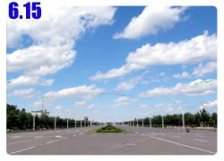

今天有些重要的事情要處理，所以南山牧場的旅遊計畫就先擱在一邊。
早上先去吃掉我卡片的銀行那裏設法將卡片領回來，本來覺得可能沒什麼希望，卡片被吃掉的時候我就想說乾脆掛失比較快。
餓著肚子走路去銀行，在預售奧運門票的櫃台那邊等，感覺真奇怪，小姐問我有沒有帶身分證，才一說我的證件是護照，她就知道那一張台灣的信用卡是我的。

核對資料填一張表格然後簽個名，歡迎卡片回到溫暖的懷抱，等進入歐洲之後，信用卡的角色可是舉足輕重的。
用刷卡換現金的方式手續費太高，所以就作罷，等著米莎莎從台灣匯給我的生活費。
回到旅館沒多久，白大哥就來找我了，白大哥是微星在新疆的業務，從我到新疆以來，他就幫我處理的很多事情。
包括幫我代收台灣寄來的兩個包裹、處理我要寄回台灣的包裹、甚至知道我的提款卡掉了之後，他還將自己的戶頭借給我，
讓米莎莎可以從台灣將錢匯到這個白大哥的帳號，然後白大哥再幫我領出來，解決旅費不足的燃眉之急。
多虧白大哥的熱心和米莎莎高度的辦事效率，匯款很快的就入了帳，接下來只要領出來，然後看是保留美金還是換成人民幣就好了。
前幾天在風口那被吹走的太陽眼鏡，米莎莎也很快的就跟RST的店長Dino又拿了一付同款的720 Armour T337，
然後去小林眼鏡幫我配了一付新的眼鏡，再用DHL寄到烏魯木齊來，今天也收到了新的眼鏡，接下來騎車就不會讓眼睛給曬壞了。
新的眼鏡和舊的那一付是同款的，只是鏡框的顏色不一樣，舊的那一付是黑的，新的則變成銀色框。
為了怕接下來眼鏡可能又會被強風或是其他的因素弄丟，所以又追加了可以勾入耳朵的橡皮筋和一條綁著眼鏡繞在脖子上的繩子。
被強風颳走的太陽眼鏡換了一付新的、讓ATM吃掉的信用卡領回來了 、遺失的提款卡也已經有現金入帳。
頭痛的問題一個一個的解決掉，多虧有米莎莎在台灣當奧援，以及新疆白大哥的協助，不然真的會有困在烏魯木齊走不下去的挫折。
為了慶祝這些失而復得的喜訊，開心的去超市買了冰淇淋回招待所吃。
下午整理了要寄回台灣的東西，因為小多的外胎情況還很好，本來是計劃到烏魯木齊的時候換外胎，但是看來可以騎到哈薩克邊界都沒問題。
既然換外胎的時間延後，那麼接下來我就要帶著本來的兩條外胎，再加上米莎莎寄給我的四條，一共六條外胎騎車。
行李整個增加很多，所以就將一些不需要的東西，像是陪了我這一路上騎車的中國地圖，和一些門票、紀念品等小東西整理一下寄回台灣。
看來明天就可以離開烏魯木齊繼續騎車了，本來只計畫在這裡休息三天，但今天已經是休息的第五天了，都已經快要落地生根在這裡。
七點多的時候從招待所出去散步，昨天從很遠的烏市西北方走回招待所，讓我對自己的腳力非常有信心，所以今天散步的目標是很遠的東北方，
那邊有一個水磨溝公園，有很多泉水和六座山以及一條河，是一座非常大的公園，是在烏市的邊緣，從市中心走到邊緣，相當的遠。
走了一個半小時，經過了幾個熱鬧的市場，賣水果的和賣菜的總是很吸引我的眼光，一公斤只要一兩塊錢的便宜價位，

每次都很想買點什麼東西來自己煮飯吃，但是每次都覺得太麻煩了而打消念頭，
最後還是買了小販已經做好的手抓餅，一路慢慢吃走到水磨溝去。
這段路其實搭公交車只要一塊錢就可以到了，用走的有點太辛苦，就當是練身體吧，休息這麼多天，感覺都變的懶散起來。
回程的時候要是走不動的話再搭公交就好～
走到八點半的時候終於到了寫著水磨溝公園的牌坊，真的是兩隻腳丫子都走痛了，幻想著裡面有很多的泉水和水車，那畫面一定很美。

等看到那美麗的畫面，這一切辛苦都是值得的。
走進牌坊才發現找不到公園，這麼大的公園怎麼可能會找不到呢？
只看到施工中的工地，看來我到的時機不太巧，這裡正在大興土木，繞過工地往裡面走，尋找公園的影子。

這裡真的種了很多的樹，與其說是公園，不如說是森林比較適當。
走小徑到一個破破的涼亭那，從這邊可以看到烏市的邊界，再遠的地方就是山脈了，烏市裡面有幾座像發電廠的巨大建築物。


但是從這座涼亭四處看去都只有高高的樹和綠綠的山，沒什麼泉水和水車的樣子呀？
問了到這邊走山路健身的阿嬤，她說水磨溝公園很大，這裡只是其中的一座山，水塔山，要看水車的話還得再走四公里。
我的老天爺~_~我已經走不動了，那就走到這裡為止吧，再走下去明天就騎不動車了。
沿著原路下斜坡，回到馬路之後就是公交車的總站，從這邊有很多車都可以載我回招待所，畢竟那邊是市中心，公交車都會經過的。
搭上三路公車，終於可以輕鬆的回去了，回去之後把所剩不多的肌樂噴一噴，罐子就丟掉，這樣行李又減少一樣。
該怎麼把行李重新分配打包，又要維持小多騎乘時重心的平衡，看來今天晚上有的搞了@@"
繼續閱讀：6.15 雨後的天空

中國-人民幣－ 1：4.3 台幣
6.14
總計：40.6元
雜貨店紅糖、冰淇淋、餅乾10.6元、晚餐回鍋肉、白飯6元、公交車1元、手抓餅3元、住店20元